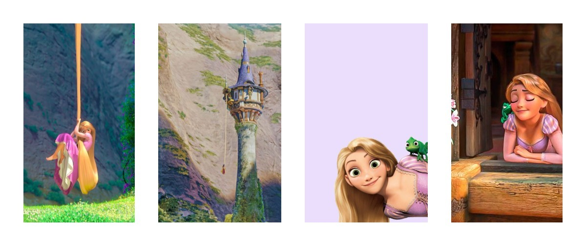

Çocukları olmayan genç bir anne ve babanın tek istekleri bir kız çocuklarının olmasıymış. Günün birinde kadın hamile olduğunu anlamış ve çok mutlu olmuşlar. Kadın, yan tarafında bulunan evin bahçesinde çok güzel yeşil marullar görmüş. Hamile olduğu için mutlaka onlardan yemek istemiş. Bunu kocasına söylemiş, kocası da tamam ben sana getiririm demiş. Ama karısı bu tehlikeli olmaz mı? Orası cadının evi demiş.
Neyse akşam olmuş, adam marulların olduğu evin önüne gelmiş ama duvarlar çok yüksekmiş. Bir merdiven getirip bahçeye girmiş ve oradan bir miktar marul alıp karısına götürmüş. Karısı afiyetle marulları yemiş ama yetmemiş akşam olduğu zaman kocası bir daha marul almaya gitmiş ama cadı onu bekliyormuş. Cadıyı karşısında gören adam ne yapacağını şaşırmış ve çok korkmuş. Cadı Sen benim marulları mı nasıl çalarsın demiş. Bunun için benden izin isteyebilirdin değil mi? demiş. Adamda sizin çok kötü olduğunuzu söylediler ve izin vermezsiniz diye korktum demiş. Cadı bunun cezasını çekeceksin demiş. Adam, karım hamile eğer marulları yemezse hasta olur demiş. Cadı seni affederim ama bir şartım var demiş çocuğun doğduğunda onu bana vereceksin. Adamda korkusundan hemen kabul etmiş. Cadı, benden istediğin kadar marul alabilirsin demiş. Adam marulları karısına götürmüş ve kadın bir güzel afiyetle marulları yemiş. Gel zaman git zaman kadın doğurmuş ve cadı gelip bebeği almış. Annesi gözyaşlarına boğulmuş. Bebek büyüyüp 16 yaşına geldiğinde çok güzel bir kız olmuş.
Cadı onu yüksek bir kulede hapsetmiş. Bir gün Rapunzel şarkı söylüyormuş. Rapunzel adı nereden gelmektedir diye merak edenler: bahçedeki marulların adı Rapunzel olduğu için kızına Rapunzel adını vermiş. Rapunzel hiç saçlarını kestirmemiş. Uzun altın sarısı saçları olmuş. Ormanda avlanan Prens aman tanrım bu sesin sahibini görmeliyim demiş. Bir bakmış ki kız yüksek bir kulede yaşıyor o sırada Rapunzel’in annesi gelmiş ve Rapunzel Rapunzel uzat o altın sarısı saçlarını demiş. Rapunzel upuzun saçlarını camdan aşağı uzatmış ve annesi saçlarına tutunarak yukarı tırmanmış. Bunu gören prens sevinmiş ertesi akşam Rapunzel’in kulesi’nin aşağısına gelmiş ve sesini değiştirerek Rapunzel Rapunzel uzat o altın sarısı saçlarını demiş. Rapunzel de saçlarını uzatmış ve prens kızın saçlarına tutunarak yukarı tırmanmış. Rapunzel karşısında prensi görünce korkmuş. İlk defa annesinden başka insan görmüş. Prens ona ne kadar güzel sesin var demiş kızın da hoşuna gitmiş ve teşekkür etmiş. Benden korkma demiş. Prens Rapunzel’e aşık olmuş ve Rapunzel de prens’ten hoşlanmış. Gel zaman git zaman prens ve Rapunzel sürekli görüşür olmuşlar. Bir gün annesi Rapunzel’in saçını tararken Rapunzel farkında olmadan büyük bir hata yapmış anne Prens senden daha hızlı tırmanıyor saçlarıma demiş. O sırada annesi sen beni nasıl aldatırsın ben seni dünyanın kötülüklerden koruyorum demiş. Annesi eline makas almış ve Rapunzel’in o uzun altın sarı saçlarını kesmiş. Annesi Rapunzel’i uzak diyarlardaki çöle göndermiş. Sonra annesi evde prensi bekliyormuş ve prens geldiğinde Rapunzel Rapunzel uzat o altın sarısı saçlarını demiş. Annesi saçları aşağı doğru uzatmış ve prens tırmanmış
Yukarı geldiğinde bir bakmış ki karşısında cadı, o anda cadı onu aşağı itmiş. Prens çalıların üstüne düşmüş ve kör olmuş. Her yerde Rapunzel’i aramış, ormanda bulduğu meyvelerle karnını doyurmuş. Bir gün çölde yürürken o güzel sesi duymuş ve o sese doğru yürümüş. Rapunzel prensi görünce ona doğru koşmuş ve ona sarılmış, ağlamış, gözyaşları prensin gözüne damlamış ve prensin gözleri yavaş yavaş görmeye başlamış ve gözleri iyileşmiş. İkisi birlikte prensin sarayına gitmişler ve halk onları çok sevmiş. Evlenip çoluk çocuğa karışmışlar. Ve ömür boyu mutlu olmuşlar